Algumas situações podem resultar nos mesmos agravos à saúde. Por exemplo, fraturas podem ser geradas por quedas de níveis diferentes, mas também podem ser causadas por impactos de materiais, por prensamento em máquinas, entre outros.
Já outras situações podem ser agrupadas pelo tipo de agente envolvido. Por exemplo, perda auditiva e catarata ocupacional podem ser geradas por formas de energia, uma acústica e outra eletromagnética, respectivamente. Devido a tais características, as situações são agrupadas por tipo de agente e definidas como fatores de riscos ocupacionais (a expressão “fator de risco ocupacional” é diferente do termo “risco”).
Os fatores que podem estar presentes no ambiente de trabalho são divididos em cinco categorias, de acordo com a Portaria n.º 25, de 29 de dezembro de 1994: físicos, químicos, biológicos, ergonômicos e de acidentes. Ainda, os fatores de riscos físicos, químicos e biológicos são classificados como agentes ambientais ou agentes de risco.
Veja a seguir os cinco grupos de riscos:
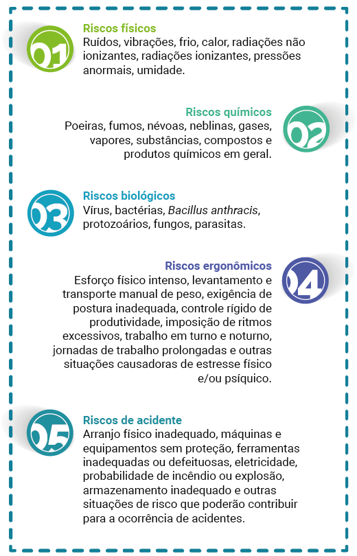Riscos físicos
Ruídos, vibrações, frio, calor, radiações não ionizantes, radiações ionizantes, pressões anormais, umidade.
Riscos químicos
Poeiras, fumos, névoas, neblinas, gases, vapores, substâncias, compostos e produtos químicos em geral.
Riscos biológicos
Vírus, bactérias, protozoários, fungos, parasitas.
Riscos ergonômicos
Esforço físico intenso, levantamento e transporte manual de peso, exigência de postura inadequada, controle rígido de produtividade, imposição de ritmos excessivos, trabalho em turno e noturno, jornadas de trabalho prolongadas e outras situações causadoras de estresse físico e/ou psíquico.
Riscos de acidente
Arranjo físico inadequado, máquinas e equipamentos sem proteção, ferramentas inadequadas ou defeituosas, eletricidade, probabilidade de incêndio ou explosão, armazenamento inadequado e outras situações de risco que poderão contribuir para a ocorrência de acidentes.
As cinco categorias e o controle delas são trabalhados pela maioria das normas regulamentadoras (NRs), de forma geral ou específica para algumas atividades econômicas, abrangendo um ou mais fatores de risco. Alguns exemplos são a NR-9, voltada aos agentes ambientais, a NR-17, relacionada às questões ergonômicas, e a NR-35, destinada ao controle de acidentes associados ao trabalho em altura.
Fatores de riscos físicos
Os riscos físicos são as formas de energia presentes (por exemplo, energias sonoras, eletromagnéticas, de pressão, térmicas e mecânicas) no ambiente de trabalho e capazes de gerar doenças ocupacionais. Os agentes físicos associados a tais energias são o ruído, o ultrassom e o infrassom, as vibrações, as temperaturas extremas, as radiações ionizantes e não ionizantes, as pressões anormais e a umidade.
O ruído, um agente muito presente em diversas atividades, é dividido em ruído contínuo, intermitente e de impacto. Os dois primeiros se diferenciam apenas pela amplitude das oscilações e, em termos práticos, são avaliados da mesma maneira. Já o ruído de impacto tem uma característica quase impulsiva, ocorrendo por breves instantes de tempo e com intervalos entre impactos respeitando certo critério. O ruído contínuo/intermitente ocorre, por exemplo, na operação de uma betoneira, no corte de madeira com ferramentas elétricas. O ruído de impacto pode ser encontrado na operação de um bate-estacas.
A exposição ao ruído tem como principal problema associado a perda auditiva. Quando o ruído está em faixas não audíveis (abaixo de 20 Hz e acima de 20 kHz), pode ser caracterizado como infrassom ou ultrassom.
O agente de risco vibração é dividido em vibração de mãos e braços e vibração de corpo inteiro e exige o contato do trabalhador com a fonte de vibração. Um trabalhador que utiliza uma furadeira para colocar estruturas segura a ferramenta com as mãos e, assim, se expõe à vibração de mãos e braços. Um operador de empilhadeira (figura 1) que realiza atividades de descarregamento de materiais está exposto à vibração de corpo inteiro por meio do assento. Embora, nesse último caso, o trabalhador possa estar exposto à vibração de mãos e braços por meio do volante, a exposição pode ser insignificante devido à frequência da vibração.
As vibrações podem causar danos aos nervos, aos músculos, ao sistema circulatório, aos ossos e às articulações.
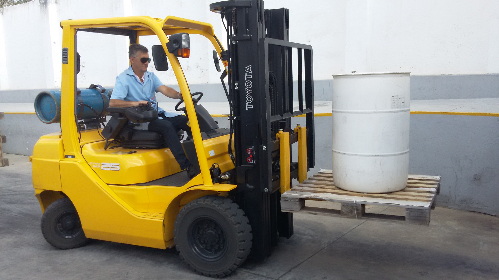Figura 1 – Exposição à vibração na operação de empilhadeira
Fonte:
<http://www.valinhos.sp.gov.br/noticias/senai-valinhos-abre-inscricao-para-o-curso-de-operacao-de-empilhadeira>.
As temperaturas extremas se dividem em calor e frio. O agente calor combina dois fatores, um ligado às temperaturas do ambiente e outro associado ao esforço realizado pelo trabalhador.
São exemplos de situações que expõem o trabalhador ao calor: a operação de fornos e o trabalho a céu aberto com ou sem demanda física elevada, por exemplo, abertura de valas manualmente (figura 2) ou entrega de correspondências realizadas a pé, respectivamente.
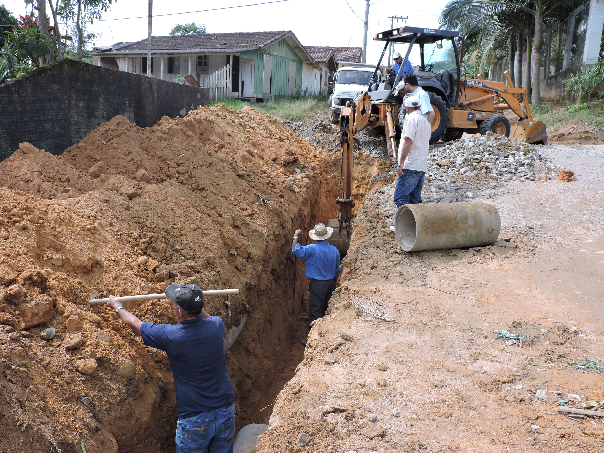Figura 2 – Exposição ao calor na abertura de vala
Fonte:
<https://www.tubarao.sc.gov.br/noticias/index/ver/codMapaItem/16675/codNoticia/164363>.
A exposição ao frio ocorre principalmente em ambientes refrigerados, como no interior de câmaras frigoríficas, e pode resultar em ulcerações e hipotermia, por exemplo.
As radiações ionizantes se dividem em radiações eletromagnéticas e corpusculares e contêm energia suficiente para ionizar átomos, desestabilizando moléculas e comprometendo as células do organismo. Os efeitos mais críticos estão associados ao desenvolvimento de câncer.
As radiações eletromagnéticas ionizantes nada mais são do que os raios X e a radiação gama (figura 3), utilizados na indústria, por exemplo, para realizar radiologia industrial e controle de nível em determinados processos em que o controle por meio de elementos tradicionais não é possível.
Na medicina, os raios X são utilizados para gerar radiografias. A radiação alfa, a radiação beta e a emissão de nêutrons são radiações ionizantes corpusculares. A radiação beta tem uso medicinal no combate a alguns tipos de câncer.
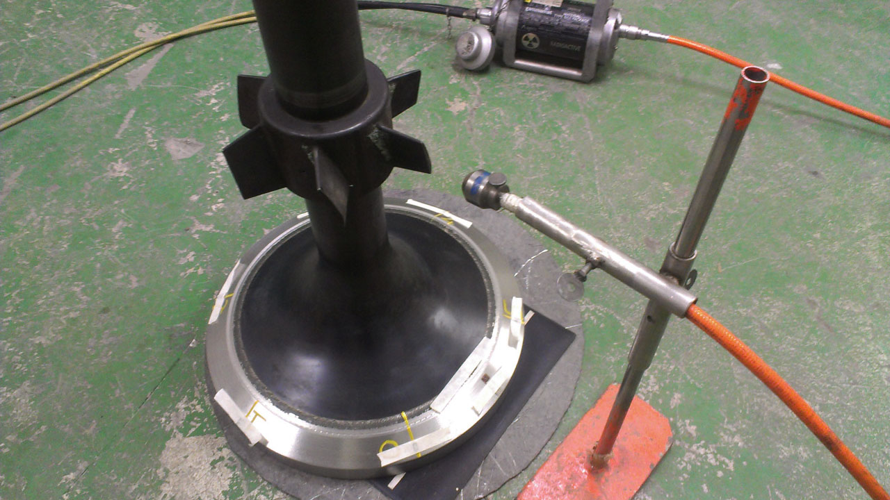Figura 3 – Gamagrafia de peça metálica
Fonte: <http://www.sidercnd.com/radiographic-and-gammagraphic-inspections-rt/>.
As radiações não ionizantes de interesse na área de segurança são as micro-ondas, a radiação infravermelha, o ultravioleta (figura 4) e o laser. Em algumas situações específicas, as radiações na faixa do rádio e as radiações de frequências extremamente baixas podem também ser de interesse na exposição ocupacional. Todos esses agentes também são radiações eletromagnéticas, mas de energia inferior. A exposição ao laser ou às micro-ondas ocorre em atividades específicas.
A presença de radiação infravermelha é avaliada como calor. Contudo, em ambientes com fontes térmicas substanciais, tais como operação envolvendo aberturas de fornos, siderurgia e metalurgia, proteções adicionais ao trabalhador são necessárias para evitar queimaduras e danos aos olhos. A exposição à radiação ultravioleta ocorre durante a exposição à carga solar e em atividades de solda elétrica.
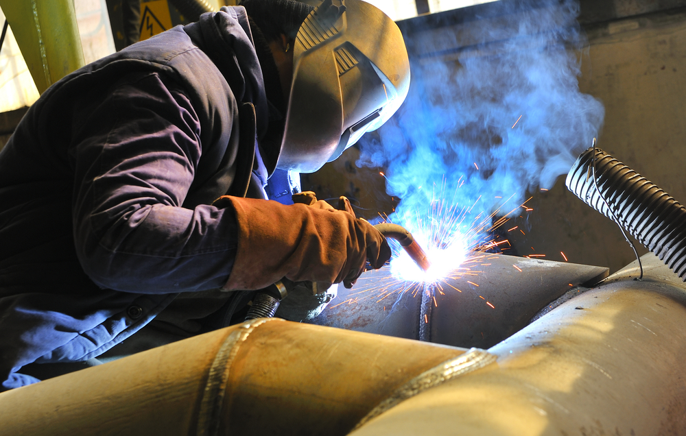Figura 4 – Exposição à radiação ultravioleta e a fumos metálicos (um
risco químico) durante atividade de solda
Fonte:
<https://safe-welding.com/hazardous-substances-in-welding-fumes-how-they-affect-the-human-body/>.
A exposição a pressões no ambiente de trabalho pode ocorrer pela injeção de ar comprimido na construção de túneis e fundações, para garantir a estabilidade do solo e evitar que infiltrações de água ocorram. Quando tal estratégia é utilizada com trabalhadores operando nesses ambientes, perfis de compressão e descompressão são aplicados para evitar a ocorrência de necrose óssea, embolia gasosa arterial, acidente vascular cerebral, entre outros.
A umidade é considerada um fator de risco físico. Atividades com exposição direta a água líquida ou em névoa, como lavagem de utensílios (figura 5) em um hotel ou lavagem de carros, são consideradas situações de exposição a esse agente. O contato com a água em estado líquido, de forma contínua, mesmo sem a presença de produtos de limpeza, pode gerar doenças como a paroníquia crônica intertriginosa.
Figura 5 – Exposição à umidade durante lavagem de louça
Fonte: <http://inopak.com/food-service-soap-hand-cleaning-products>.
Fatores de riscos químicos
Os fatores de riscos químicos referem-se à exposição do trabalhador a poeiras, fibras, fumos, névoas, neblinas, gases e vapores de produtos químicos, além do contato com líquidos. As vias de exposição são a cutânea, a respiratória e a digestiva. Porém, as vias apresentam características de absorção diferentes, de modo que um agente pode não ser absorvido, por exemplo, por contato com a pele, mas apresentar rápida absorção pelo sistema respiratório.
Poeiras e fumos são partículas sólidas. As poeiras são geradas por processos mecânicos (por exemplo, abrasão e corte) e encontradas nos mais diversos processos industriais (beneficiamento de madeiras, extração de pedras, construção civil, processamento de cereais). Quando a partícula sólida contiver um comprimento maior que o próprio diâmetro, é classificada como uma fibra. Por exemplo, em atividades de lixamento de tábuas, há geração de poeira de madeira. O material é dividido e lançado no ambiente pelo processo de abrasão da superfície.
Já os fumos originam-se do processo de vaporização de um material sólido por meio de aquecimento. Quando esse material vaporizado se afasta da fonte térmica, ele retorna à sua fase sólida. Também é possível que esse vapor reaja com os outros elementos e acabe formando um composto com ponto de ebulição elevado, o que acaba por forçar uma transição de fase novamente, gerando o sólido. Fumos são tipicamente encontrados nas atividades de solda (figura 4) e na pavimentação a quente de vias.
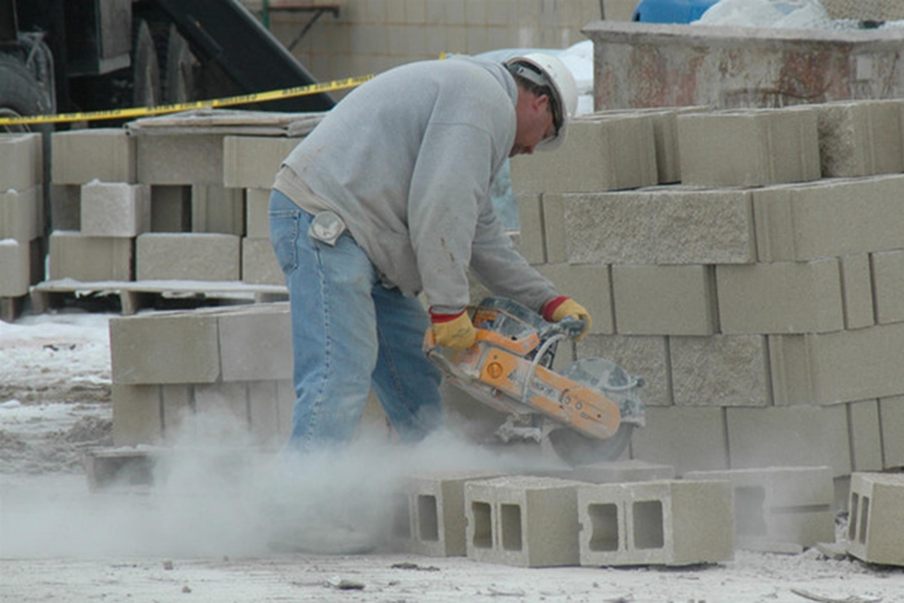Figura 6 – Exposição à poeira contendo sílica livre cristalizada
Fonte:
<https://www.nbcnews.com/health/health-news/dangerous-dust-government-pushes-improve-workplace-safety-n72121>.
A diferença entre névoas e neblinas, ambas partículas líquidas suspensas no ar, também está relacionada à forma de geração. Névoas são geradas pela ruptura mecânica de um líquido, a exemplo do que ocorre na pintura com pistola (figura 7). Neblinas são geradas por aquecimento de um líquido e pela vaporização deste, com posterior resfriamento e retorno à fase líquida. Em processos de galvanoplastia (figura 8), podem-se encontrar neblinas ácidas provenientes dos banhos de tratamentos de peças metálicas.
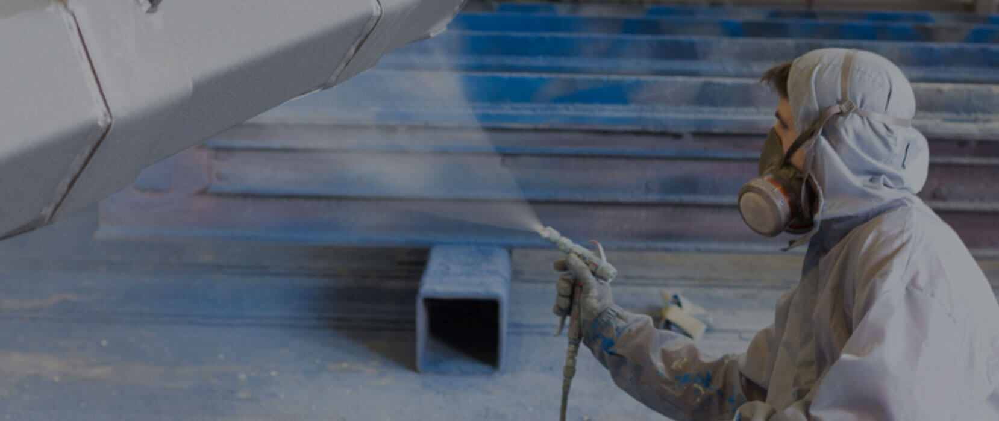Figura 7 – Exposição à névoa de tinta e à névoa e a vapores do
solvente
Fonte: <https://opintorconsultoria.com/wp-content/uploads/2017/07/p1.jpg>.
Figura 8 – Tratamento superficial de peça metálica com possibilidade
de geração de neblinas ácidas
Fonte:
<https://www.terra.com.br/noticias/dino/conheca-mais-detalhes-sobre-a-galvanoplastia-e-sua-importancia,8a269cc5be4a38eeb69047ac53242f3a3drimgak.html>.
Vapores são originados de um produto líquido nas condições de uso – produtos estes com certas propriedades físico-químicas que permitem a tais substâncias volatilizar parte do conteúdo destas.
Por exemplo, em um posto de abastecimento de combustíveis, é possível sentir o cheiro de gasolina. Tal gasolina que está no ambiente é definida como vapor de gasolina, e não como gás de gasolina, pois o produto, nas condições de uso, encontra-se líquido.
Os gases, por sua vez, são o estado físico esperado das substâncias que, na condição ambiental, já são naturalmente gases, como é o caso do gás nitrogênio, do metano e do óxido de etileno.
Para definir um risco químico, não basta indicar se a substância é um gás, um vapor ou qualquer outra forma. Também é importante destacar explicitamente o agente, por exemplo, poeira de cedro-vermelho, vapor de acetona, névoa de óleo mineral.
Os efeitos nocivos dos agentes químicos estão associados à estabilidade, à característica química e à afinidade deles com sistemas ou órgãos do corpo humano. Dessa forma, os agentes são classificados conforme o tipo de efeito que causam. Há agentes nefrotóxicos e hepatotóxicos, toxinas pulmonares, toxinas do sistema hematopoiético, neurotoxinas, asfixiantes, entre outros, sendo possível separá-los pela forma de ação que geram (sistêmica ou local).
Um agente de efeito sistêmico é aquele que provoca danos em local diferente ao do ponto de contato. Por exemplo, fumos de cádmio são absorvidos pelo pulmão, mas apresentam efeitos sobre rins, fígado e ossos. Já substâncias irritantes primárias, como amônia, provocam o dano no ponto de contato, como nas mucosas dos olhos e do sistema respiratório.
Fatores de riscos biológicos
Os agentes biológico são definidos como bactérias, protozoários, vírus e microrganismos que, de forma geral, possam entrar em contato com o trabalhador durante as atividades laborais e causar algum prejuízo à saúde deste. Trabalhadores de hospitais, clínicas de odontologia e postos de saúde, por exemplo, podem estar expostos a agentes causadores de hepatite, meningite, tuberculose, HIV.
Nesses ambientes, pode-se ter contato com agentes biológicos específicos em função das atividades envolvidas. Portanto, é preciso trabalhar com parâmetros como virulência, patogenicidade, transmissibilidade e permanência do agente no ambiente, a fim de definir a melhor forma de controle.
Em outros casos, os agentes biológicos são tratados de modo amplo (por exemplo, no caso de profissionais de higienização, trabalhadores da construção civil, da agroindústria e do extrativismo vegetal e trabalhadores da coleta e do processamento de resíduos). Nessas atividades, os parâmetros destacados podem ter um papel secundário na avaliação, devido ao perfil de exposição. Ainda assim, medidas de controle devem ser adotadas.
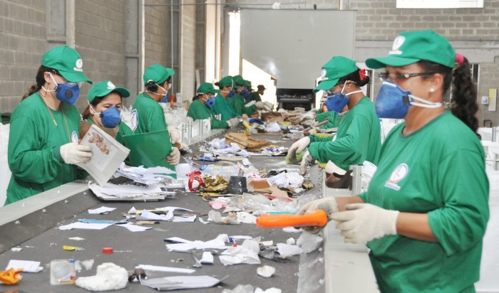Figura 9 – Exposição ao risco biológico na manipulação de resíduos
Fonte:
<http://www.sjp.pr.gov.br/sao-jose-dos-pinhais-destina-corretamente-mais-de-50-toneladas-de-lixo-por-dia/>.
Na área da saúde ou em outras, a pele representa uma barreira para a maioria dos agentes biológicos. Em atividades que podem expor os trabalhadores a objetos que provoquem cortes ou punções, cuidados adicionais devem ser adotados, pois a proteção fornecida pela pele será comprometida, tornando o ferimento uma via potencial de contaminação.
A exposição aos agentes pode ocorrer pelo contato com fluidos corporais, excrementos de animais ou líquidos contaminados. Nesses casos, existe uma probabilidade de contaminação da vestimenta do trabalhador, e ele pode ficar exposto ao agente biológico ao longo de toda a jornada, mesmo que a atividade tenha durado apenas alguns instantes.
Fatores de riscos ergonômicos
Os fatores de riscos ergonômicos estão associados a situações que geram estresse físico ou psíquico. Situações que envolvem postura estática, esforço físico intenso, repetição de movimentos, trabalho em posição inadequada – gerada pelas características da atividade ou pelo próprio mobiliário de trabalho – e monotonia representam algumas condições geradoras de estresse físico. Situações que envolvem conforto nos ambientes de trabalho (por exemplo, conforto térmico, conforto acústico e nível de iluminamento) também são consideradas riscos ergonômicos.
A operação de caixa de supermercado (figura 10), por exemplo, é uma atividade que expõe trabalhadores a riscos ergonômicos, pois eles executam a atividade sentados ao longo do dia, em posição estática, além de, eventualmente, passarem pelo caixa objetos de elevada massa, provocando esforço excessivo das costas e torção do tronco durante o movimento da carga.
Os trabalhadores de frigoríficos (figura 11) na linha de desossa realizam uma série de movimentos para separar a carne dos ossos. Os movimentos são repetidos incessantemente ao longo da jornada e acabam por gerar lesões nos tendões, nos nervos, nos músculos e no sistema vascular dos membros envolvidos, a médio e longo prazos, se medidas adequadas não forem empregadas para evitá-las.
Figura 10 – Caixa de supermercado exposta à demanda ergonômica
Fonte:
<http://voxms.com.br/wp-content/uploads/2018/04/caixa-supermercado.jpg>.
Figura 11 – Trabalhador limpando cortes de carne e executando movimentos repetitivos
Fonte:
<http://www.iagro.ms.gov.br/tour-virtual-pela-planta-de-desossa-e-industrializados-da-plena-alimentos-em-contagem-mg/>.
O estresse psíquico nos ambientes de trabalho está ligado à monotonia, aos trabalhos com exigências severas de produtividade ou com controle inflexível de prazos e metas, à demanda de atenção constante, às demandas ou às instruções conflitantes, à exigência de decisões extremas frequentes etc.
Dois exemplos que ilustram situações que podem gerar sobrecarga psíquica de trabalhadores são as atividades de operadores de voo e técnicos em enfermagem. Os operadores de voo, embora auxiliados por uma série de instrumentos eletrônicos, devem ter constante atenção, verificando se condições adequadas estão presentes para as manobras de aeronaves e entrando em contato com pilotos para informar a situação atual. Nessa atividade, um pequeno descuido pode resultar em um grave acidente.
No caso dos técnicos em enfermagem, em especial aqueles ligados ao atendimento de doentes terminais e de doentes neurológicos, a carga psicológica, por lidar com o sofrimento e a morte frequentes, é enorme e ainda está associada a outros fatores ergonômicos, como jornadas prolongadas e esforço físico em posições inadequadas nas atividades de movimentação desses pacientes.
A ergonomia pode ser dividida em ergonomia física, cognitiva e organizacional.
A ergonomia física foca na relação entre a atividade executada e as características biomecânicas do trabalhador, tendo como objetivo tornar o posto de trabalho compatível com as características físicas do funcionário.
A ergonomia cognitiva está voltada à adaptação das atividades relacionadas às demandas mentais dos trabalhadores, objetivando tornar mais claras tais atividades e auxiliar na execução destas.
Por fim, a ergonomia organizacional está relacionada aos processos de trabalho e à relação destes com a comunicação entre as partes, à gestão da qualidade, à divisão de tempo entre as atividades, entre outros. O objetivo da ergonomia organizacional é adaptar os processos da empresa aos trabalhadores.
A ergonomia física está relacionada a situações geradoras de estresse físico. Já a ergonomia cognitiva pode estar relacionada ao estresse psicológico. As questões de ergonomia organizacional impactam os processos de trabalho e, consequentemente, sobrecarregam os estados físico e psicológico dos trabalhadores.
Quando um processo não é adequado ergonomicamente, resulta, a médio e longo prazos, em doenças ocupacionais e na queda da produtividade.
Fatores de riscos de acidentes
Quando um agente ou uma situação no ambiente de trabalho tem potencial para causar um dano imediato ao trabalhador (fraturas, cortes, quedas, choque elétrico, queimaduras, incêndio, morte e outras situações equivalentes), tal agente é classificado como fator de risco de acidente.
Os riscos de acidentes referem-se à presença de energia elétrica, à probabilidade de incêndio e explosões, à existência de animais peçonhentos no ambiente ou podem estar relacionados a alguma característica de execução da atividade, com equipamentos inadequados ou defeituosos, sem proteção de elementos, sem instruções da forma de uso e sem caraterísticas do ambiente.
Em manutenção de redes elétricas energizadas (figura 12) ou em proximidade destas, na operação de equipamentos elétricos com cabos de alimentação danificados ou em locais úmidos, a presença de eletricidade é um fator a ser considerado na avaliação de riscos. A eletricidade é especialmente crítica, pois, além do potencial para causar graves ferimentos, a presença dela não pode ser constatada por uma inspeção visual.
Já nas operações de transferência de combustível entre um caminhão-tanque e uma aeronave ou um posto de combustível, na manipulação de explosivos ou na verificação de detonações que falharam, em depósitos de materiais inflamáveis, a possibilidade de incêndio ou de explosões é relevante.
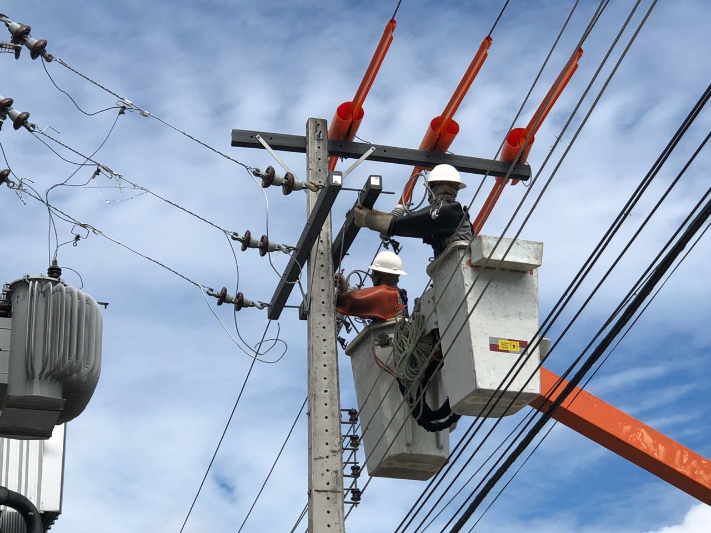Figura 12 – Atividade com exposição à eletricidade em rede de distribuição
Fonte:
<http://www.eletrobrasamazonas.com/cms/index.php/eletrobras-realiza-melhorias-na-rede-eletrica-e-reforca-equipes-durante-a-copa-do-mundo/>.
Máquinas e equipamentos são elementos que podem causar acidentes, seja pela ausência de proteções em sistemas mecânicos (engrenagens, correias), seja pelas próprias zonas de operação que realizam conformações mecânicas (cortes, furos, impactos, entre outros).
A probabilidade de acidente com tais dispositivos é elevada quando são utilizados equipamentos inadequados, como no caso de corte de materiais com serra circular, usando discos impróprios para o material ou com capacidade máxima de rotação inferior à da máquina. Essa situação pode gerar um contragolpe do disco ou a própria ruptura deste, ambos acidentes com potencial de ferimentos graves.
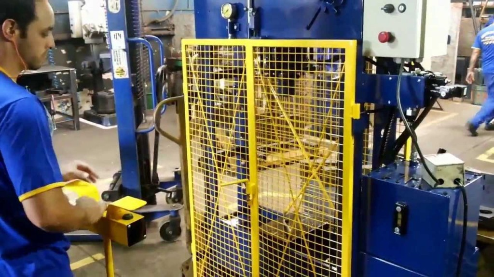Figura 13 – Prensa com zonas perigosas protegidas por sistemas fixos (grade em amarelo)
Fonte:
<http://portaldostrabalhadores.com.br>.
Ambientes desorganizados, com materiais acumulados nas vias de circulação e com armazenamento realizado incorretamente, como no caso de empilhamento além da capacidade segura, ou com materiais empilhados e escorados em paredes não projetadas para tanto, contribuem para ocorrerem acidentes. Ambientes com pouca iluminação que prejudiquem a percepção da existência de elementos representam outra condição de risco associada ao ambiente.
As situações de acidentes, na maioria das vezes, são fáceis de serem identificadas e avaliadas quanto ao potencial de dano quando comparadas aos demais riscos. Por exemplo, um trabalhador em um açougue cortando algo com uma faca: aqui, é razoável imaginar que ele pode se cortar com a lâmina, mas não é possível prontamente afirmar se ele poderá desenvolver uma lesão por esforço repetitivo devido à atividade que exerce.
A escolha inadequada de equipamentos de proteção pode contribuir para a ocorrência de acidentes. Para os trabalhadores que operam ferramentas rotativas e utilizam luvas, se houver a possibilidade de a luva entrar em contato com a superfície que está em rotação, existe uma chance substancial de a mão do funcionário ser puxada para o mecanismo de transmissão de força. O mesmo pode ocorrer com vestimentas longas, como camisas, e cabelos longos.
Em atividades em que há ruído, a escolha incorreta de protetores auditivos pode resultar em superatenuação. Se nesse ambiente for importante a comunicação entre funcionários ou houver alarmes sonoros, talvez o trabalhador não consiga identificar um alerta ou um aviso de uma máquina.
Exposições descontroladas a agentes físicos (por exemplo, calor) ou a agentes químicos podem resultar em um acidente devido a um mal súbito provocado pelo agente. Em situações que envolvem esforço físico extremo durante grandes intervalos de tempo, uma queda do nível de glicose no sangue também pode resultar em um acidente.
A forma como as atividades são organizadas pode contribuir para acidentes. Uma demanda por atendimentos, por exemplo, em atividades no setor elétrico de distribuição pode acabar forçando que as atividades sejam realizadas mais rápida e descuidadamente, o que contribui para elevar o risco de choque elétrico.
Além dos fatores diretos que resultam no acidente, tais como operação de equipamentos sem autorização, falha na sequência de procedimentos, uso de proteções inadequadas etc., existem outros fatores que suportam tais situações, os quais estão relacionados, por exemplo, à capacidade física, à falta de conhecimento, à falha na supervisão e à compra inadequada. Esses pontos devem ser considerados na proposição de controles para esse risco ocupacional.
A prevenção de acidentes e de doenças ocupacionais por meio de medidas de controle adequadas somente pode ser realizada após a identificação dos fatores de risco que estão presentes no ambiente. Na etapa de levantamento inicial dos fatores de riscos ocupacionais, duas situações são possíveis: as atividades são executadas sempre no mesmo ambiente e da mesma maneira ou são executadas em ambientes variados, mas com a mesma finalidade.
Quando uma tarefa é realizada da primeira maneira, um levantamento dos fatores de risco e um controle na modificação dos processos envolvidos são suficientes para definir as formas de controle.
Tal levantamento pode ser realizado com uma checklist que contemple as seguintes informações:
Normalmente, nesse levantamento, as medidas de controle são propostas em um segundo momento, ou seja, não é durante o reconhecimento que o potencial de dano é avaliado e que a melhor estratégia é definida.
Em atividades executadas em ambientes variados, além dos fatores de risco inerentes, outras condições podem estar presentes em situações específicas. Por exemplo, nos trabalhos de conservação de fachadas de prédios, existe risco de acidente associado ao trabalho em altura. Contudo, se a atividade envolver pintura ou for realizada nas proximidades das instalações elétricas, então outros fatores de risco devem ser considerados – no caso, um químico (envolvendo a tinta) e outro de acidente (envolvendo eletricidade). Portanto, cabe realizar uma avaliação padronizada em cada local, para identificar todos os fatores de risco e definir as medidas de controle adequadas.
A avaliação é feita por meio de ferramentas específicas, como a análise preliminar de riscos (APR), a qual avalia cada situação com base no potencial de gravidade do acidente ou da doença, na probabilidade de ocorrência e na frequência de exposição. Dessa forma, podem-se definir o nível de riscos e as medidas adequadas.
A checklist ou as APRs podem ser utilizadas em ambas as situações descritas. O profissional de segurança do trabalho deve utilizar a ferramenta mais adequada ao processo analisado e a que estiver mais habituado.
Ao avaliar os fatores de risco ocupacionais no ambiente de trabalho, podem-se também encontrar situações de trabalho que exponham o trabalhador a mais de um tipo de fator de risco. Inicialmente, os fatores de risco são avaliados independentemente. Porém, há certas combinações de fatores de risco que requerem atenção especial, pois normalmente envolvem um agente ambiental.
É o caso, por exemplo, do trabalhador de roçagem, o qual tem uma demanda ergonômica por sustentar o equipamento ao longo da atividade ao mesmo tempo que está exposto à vibração. Ambos os agentes têm potencial para danos nos mesmos sistemas do corpo. Sendo assim, a exposição conjunta pode resultar em um agravo maior do que os fatores de risco analisados individualmente.
Observe os exemplos a seguir. Neles, será apresentado um levantamento de fatores de risco para atividades de roçagem e pavimentação de vias. O levantamento indica a existência dos riscos, mas não é avaliado o potencial de dano ao trabalhador, em função de características da atividade ou das proteções existentes. Obviamente, nem sempre deve ser usado esse levantamento como padrão para esse tipo de exposição.
Observe a imagem a seguir. Nela, o trabalhador está realizando a atividade de roçagem. Que fatores de risco podem ser levantados quanto à atividade em questão?

Figura 14 – Trabalhador em atividade de roçagem
Fonte:
<http://agencia.sorocaba.sp.gov.br/prefeitura-realiza-rocagem-e-limpeza-em-16-bairros/>.
Fatores de riscos ocupacionais que podem ser levantados
Fatores de riscos físicos
Fatores de riscos químicos
Fatores de riscos biológicos
Fatores de riscos ergonômicos
Fatores de riscos de acidentes
Observe a figura a seguir. Com relação à pavimentação de vias, que riscos ocupacionais poderiam ser levantados?
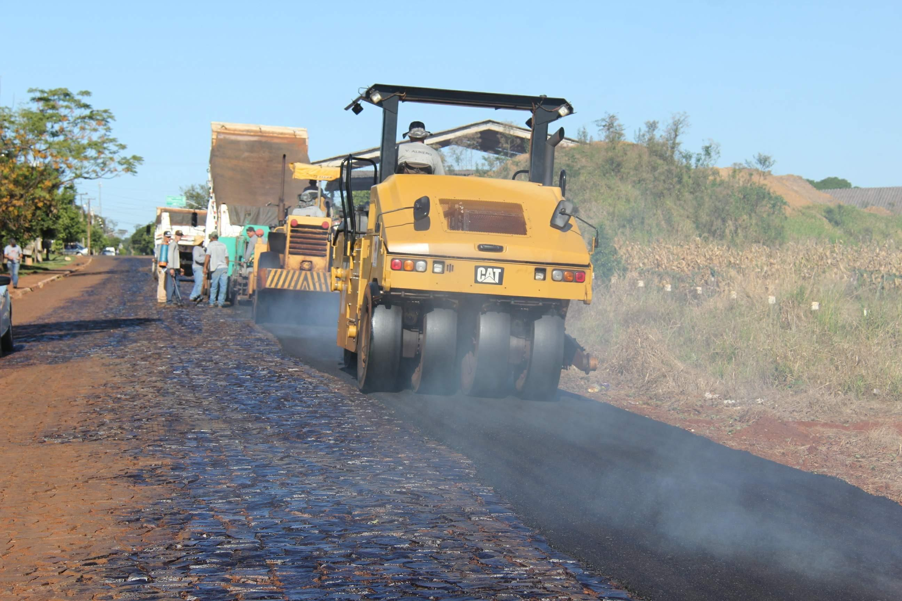Figura 15 – Atividade de pavimentação de vias
Fonte:
<https://www.jornaldooeste.com.br/noticia/prefeitura-de-nova-santa-rosa-realiza-pavimentacao-asfaltica-na-linha-gabiroba>.
Riscos ocupacionais que podem ser levantados
Fatores de riscos físicos
Fatores de riscos químicos
Fatores de riscos biológicos
Fatores de riscos ergonômicos
Fatores de riscos de acidente
As estratégias de controle para os diversos riscos dependem diretamente da identificação destes, das rotinas e das atividades desempenhadas e das máquinas e dos produtos empregados. Uma atividade poderá ser desenvolvida com segurança, na presença de riscos ocupacionais, desde que o nível de risco seja corretamente controlado.